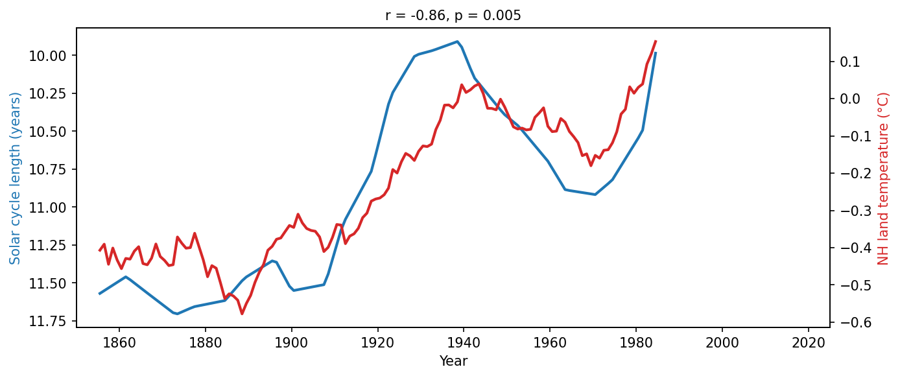
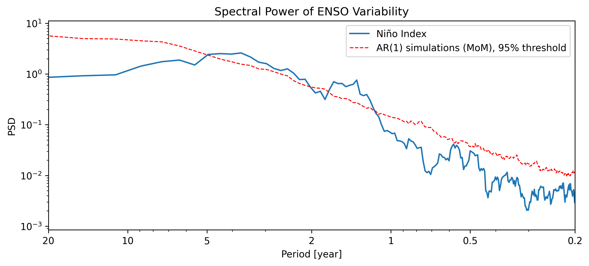

Are Methods Actionable?
Can you reproduce this result?
NoteInstructions
Chances are you have come across results in scientific publications, posters or talks, and wondered: “How did they get here?”. Supposedly that is what the Methods section explains, but that information is not always actionable.
Each scenario below starts from an excerpt of a methods section (a real one for Correlations, a fictitious one for Spectral Analysis). The goal of the exercise is to determine whether the provided instructions are sufficient to reproduce the results shown in Figure 1. As you complete this exercise, take careful notes about what information is missing from the methods section that would help you reproduce the results.
Choose one scenario to complete.
Friis-Christensen & Lassen (1991) compared the length of the Sun’s activity cycle with Northern Hemisphere temperature (Figure 1) and concluded:
“There is a close association between the two curves in the up-going trends from 1900 to 1940 and since 1970, as well as in the important decrease from 1945 to 1970.”

Reproducing the analysis
The paper’s methods section leaves three steps open to interpretation. Try different readings of each and see whether the claim still holds, especially since 1970 (shaded). Some of these gaps matter, and others don’t.
If you want to go further (correlations, statistical significance, data up to the present), try the Deep End version of this exercise.
corrActivity = {
const attempts = [];
let currentAttempt = null;
const root = html`
<div>
<div class="row g-4">
<!-- LEFT COLUMN -->
<div class="col-12 col-md-4">
<h3><strong>Your choices</strong></h3>
<h4><strong>1. Dates of sunspot maxima and minima</strong></h4>
<p>
Solar cycle lengths are measured between the dates of sunspot maxima and minima.
The paper doesn't say how these dates were found.
</p>
<div class="mb-4">
<label class="form-label">Find the dates from</label>
<select class="form-select" id="c-extrema">
<option value="13month">Smoothed monthly sunspot counts</option>
<option value="yearly">Yearly sunspot counts</option>
<option value="monthly">Raw monthly sunspot counts</option>
</select>
</div>
<h4><strong>2. End of the record</strong></h4>
<p>
The paper smooths the dates by averaging each one with its neighbors. The most recent
dates don't have enough neighbors yet. The paper says it "estimated the next extremum",
but not how.
</p>
<div class="mb-4">
<label class="form-label">End of the record</label>
<select class="form-select" id="c-end">
<option value="average">Emulating the paper: estimate from the average cycle length</option>
<option value="last">Emulating the paper: estimate from the last cycle length</option>
<option value="leave_out">Same filter, leave out the last dates</option>
</select>
</div>
<h4><strong>3. Temperature smoothing</strong></h4>
<p>
The paper only says the temperatures were "smoothed by Jones".
</p>
<div class="mb-4">
<label class="form-label">Temperature smoothing</label>
<select class="form-select" id="c-temperature">
<option value="12221">Same filter as the solar cycle</option>
<option value="none">No smoothing</option>
<option value="running11">11-year running average</option>
</select>
</div>
<button
type="button"
class="btn btn-primary w-100"
id="c-generate">
Generate figure
</button>
</div>
<!-- RIGHT COLUMN -->
<div class="col-12 col-md-8">
<h3><strong>Your workflow</strong></h3>
<div class="callout callout-style-default callout-info">
<div class="callout-body-container callout-body">
<p><strong>Dates of maxima and minima:</strong> <span id="c-summary-extrema"></span></p>
<p><strong>End of the record:</strong> <span id="c-summary-end"></span></p>
<p><strong>Temperature smoothing:</strong> <span id="c-summary-temperature"></span></p>
</div>
</div>
<h3 class="mt-4"><strong>Your result</strong></h3>
<div id="c-result" style="min-height: 250px;">
<em>Your generated figure will appear here.</em>
</div>
<p id="c-attempt-status" class="text-muted mt-2"></p>
</div>
</div>
<hr class="my-5">
<!-- NOTEPAD -->
<h2><strong>Notepad</strong></h2>
<p>
<strong>When you are done, reflect:</strong> which choices changed whether the claim holds,
and which made no difference? Was this what you expected?
</p>
<p id="c-notes-label">
As you work, keep track of information you wish the Methods section had provided.
</p>
<textarea
id="c-notes"
class="form-control"
rows="8"
placeholder="What information is missing? What decisions did you have to make?"
></textarea>
<button
type="button"
class="btn btn-primary mt-3"
id="c-download">
Download notes
</button>
<details id="c-history-container" class="mt-4" hidden>
<summary><strong>Attempt history</strong></summary>
<div id="c-history" class="mt-3"></div>
</details>
</div>
`;
// --------------------------------------------------
// Get controls
// --------------------------------------------------
const keys = ["extrema", "end", "temperature"];
const controls = Object.fromEntries(
keys.map(k => [k, root.querySelector(`#c-${k}`)])
);
// Labels come from the dropdown options, so the summary, history and
// downloaded notes always match what the learner sees
const labels = Object.fromEntries(
keys.map(k => [k, Object.fromEntries(
[...controls[k].options].map(o => [o.value, o.textContent.trim()])
)])
);
const titles = {
extrema: "Dates of maxima and minima",
end: "End of the record",
temperature: "Temperature smoothing"
};
const result = root.querySelector("#c-result");
const status = root.querySelector("#c-attempt-status");
const notes = root.querySelector("#c-notes");
const notesLabel = root.querySelector("#c-notes-label");
const historyContainer = root.querySelector("#c-history-container");
const history = root.querySelector("#c-history");
// --------------------------------------------------
// Current workflow and summary
// --------------------------------------------------
function getWorkflow() {
return Object.fromEntries(keys.map(k => [k, controls[k].value]));
}
function sameWorkflow(a, b) {
if (!a || !b) return false;
return keys.every(k => a[k] === b[k]);
}
function describe(w) {
return keys.map(k => labels[k][w[k]]).join(" → ");
}
function updateSummary() {
const workflow = getWorkflow();
for (const k of keys) {
root.querySelector(`#c-summary-${k}`).textContent = labels[k][workflow[k]];
}
updateStatus();
}
function updateStatus() {
if (!currentAttempt) {
status.textContent = "";
return;
}
status.textContent = sameWorkflow(getWorkflow(), currentAttempt)
? `Showing result from Attempt ${currentAttempt.number}.`
: "Your selections have changed. Click Generate figure to see the new result.";
}
// --------------------------------------------------
// Attempt history
// --------------------------------------------------
function renderHistory() {
history.replaceChildren();
for (const attempt of attempts) {
const entry = document.createElement("div");
entry.className = "border-bottom pb-3 mb-3";
const title = document.createElement("strong");
title.textContent = `Attempt ${attempt.number}`;
const workflow = document.createElement("div");
workflow.className = "small mt-1";
workflow.textContent = describe(attempt);
entry.append(title, workflow);
if (attempt.notes.trim()) {
const note = document.createElement("div");
note.className = "small mt-2";
note.textContent = `Notes: ${attempt.notes}`;
entry.appendChild(note);
}
history.appendChild(entry);
}
historyContainer.hidden = attempts.length === 0;
}
// --------------------------------------------------
// Generate figure
// --------------------------------------------------
root.querySelector("#c-generate").addEventListener("click", () => {
if (currentAttempt) currentAttempt.notes = notes.value;
const workflow = getWorkflow();
const match = corrManifest.find(d => keys.every(k => d[k] === workflow[k]));
if (!match) {
result.innerHTML =
`<div class="alert alert-warning">
No precomputed result was found for this workflow.
</div>`;
return;
}
// First notes entered before generating belong to Attempt 1.
const attempt = {
number: attempts.length + 1,
...workflow,
notes: attempts.length === 0 ? notes.value : ""
};
attempts.push(attempt);
currentAttempt = attempt;
if (attempt.number > 1) notes.value = "";
// Display figure
result.replaceChildren();
const img = document.createElement("img");
img.src = match.image;
img.alt = `Generated figure for Attempt ${attempt.number}`;
img.style.width = "100%";
img.style.height = "auto";
result.append(img);
notesLabel.textContent =
`Notes for Attempt ${attempt.number}: ` +
"record what you observe and what information you wish had been provided.";
renderHistory();
updateStatus();
});
// --------------------------------------------------
// Continuously save current notes
// --------------------------------------------------
notes.addEventListener("input", () => {
if (currentAttempt) currentAttempt.notes = notes.value;
});
// --------------------------------------------------
// Download notes + attempts
// --------------------------------------------------
root.querySelector("#c-download").addEventListener("click", () => {
if (currentAttempt) currentAttempt.notes = notes.value;
let output =
"ARE METHODS ACTIONABLE?\n" +
"Workflow reproduction exercise: Correlations\n" +
"========================================\n\n";
if (attempts.length === 0) {
output += "No figures were generated.\n\n";
if (notes.value.trim()) output += "NOTES\n" + notes.value.trim() + "\n";
} else {
for (const attempt of attempts) {
output += `ATTEMPT ${attempt.number}\n`;
output += "----------------------------------------\n";
for (const k of keys) output += `${titles[k]}: ${labels[k][attempt[k]]}\n`;
output += "\nNotes:\n";
output += attempt.notes.trim() ? attempt.notes.trim() : "(No notes recorded)";
output += "\n\n========================================\n\n";
}
}
const blob = new Blob([output], {type: "text/plain;charset=utf-8"});
const url = URL.createObjectURL(blob);
const link = document.createElement("a");
link.href = url;
link.download = "correlation-reproduction-notes.txt";
document.body.appendChild(link);
link.click();
link.remove();
URL.revokeObjectURL(url);
});
// --------------------------------------------------
// Control listeners and initial state
// --------------------------------------------------
for (const k of keys) controls[k].addEventListener("change", updateSummary);
updateSummary();
return root;
}Imagine the following line in an article, without further description: We examined interannual variability in the El Niño Southern Oscillation (ENSO) using spectral analysis. Results of this analysis are shown in Figure 1.

Reproducing the analysis
Use the information provided in this cursory “Methods section” to reproduce Figure 1. Before you begin, know that while spectral analysis is a complex topic, you do not need to know anything about it for the purposes of this exercise. You can treat it as “black box” involving many possible decisions, and the point of the exercise is to show just how ambiguous the deceptively simple the phrase “using spectral analysis” can be.
activity = {
const attempts = [];
let currentAttempt = null;
const labels = {
dataset: {
"nino3": "Niño 3",
"nino34": "Niño 3.4",
"nino4": "Niño 4"
},
detrend: {
"none": "None",
"linear": "Linear",
"constant": "Constant",
"savitzky-golay": "Savitzky-Golay",
"emd": "EMD"
},
regridding: {
"none": "None",
"linear": "Linear interpolation",
"cubic": "Cubic spline interpolation",
"bin": "Binning"
},
spectral: {
"lomb-scargle": "Lomb–Scargle",
"fourier": "Periodogram",
"mtm": "MTM"
},
significance: {
"none": "None",
"100": "100 simulations",
"250": "250 simulations",
"500": "500 simulations"
}
};
const root = html`
<div>
<div class="row g-4">
<!-- LEFT COLUMN -->
<div class="col-12 col-md-4">
<h3><strong>Your choices</strong></h3>
<h4><strong>1. Data</strong></h4>
<p>
The first decision to make is what measure of "ENSO" to use.
Several indices are available for this purpose. Here we provide
3 common ones (whose exact definitions are not important for the
purposes of this exercise).
</p>
<div class="mb-4">
<label class="form-label">ENSO index</label>
<select class="form-select" id="dataset">
<option value="nino3">Niño 3</option>
<option value="nino34">Niño 3.4</option>
<option value="nino4">Niño 4</option>
</select>
</div>
<h4><strong>2. Detrending</strong></h4>
<p>
Next we need to decide how to take out trends, as those can bias the low end of a spectrum. Here are 5 of many possible choices:
</p>
<div class="mb-4">
<label class="form-label">Detrending method</label>
<select class="form-select" id="detrend">
<option value="none">None</option>
<option value="linear">Linear</option>
<option value="constant">Constant</option>
<option value="savitzky-golay">Savitzky-Golay</option>
<option value="emd">EMD</option>
</select>
</div>
<h4><strong>3. Regridding</strong></h4>
<p>
The series we provided contained missing data, so you need to decide what to do about that. Some methods only work with complete datasets, while others are tolerant to missing data. Depending on the choice you make here, different spectral methods will be open to you.
</p>
<div class="mb-4">
<label class="form-label">Regridding method</label>
<select class="form-select" id="regridding">
<option value="none">None</option>
<option value="linear">Linear interpolation</option>
<option value="cubic">Cubic spline interpolation</option>
<option value="bin">Binning</option>
</select>
</div>
<h4><strong>4. Spectral analysis</strong></h4>
<p>
Now for the methods: several are available. Lomb–Scargle is designed to work with missing data; the other two are not. Their other differences are important, but not relevant to this exercise.
</p>
<div class="mb-4">
<label class="form-label">Spectral method</label>
<select class="form-select" id="spectral">
<option value="lomb-scargle">Lomb–Scargle</option>
</select>
</div>
<h4><strong>5. Significance</strong></h4>
<p>
The final decision to make is how statistical significance is established. Fig 1 features a red dashed line that shows the 95% benchmark against the null hypothesis that the series is a form of pure noise with some short-term memory ("red noise" for those who are familiar). This benchmark allows one to judge which parts of the spectrum are statistically significant, and is obtained by applying the same spectral method to several examples of such noise (this is called "Monte Carlo simulations", a tribute to Monte Carlo and its games of chance). Since this is simulation-based, the number of simulations can make a difference:
</p>
<div class="mb-4">
<label class="form-label">Number of simulations</label>
<select class="form-select" id="significance">
<option value="none">None</option>
<option value="100">100</option>
<option value="250">250</option>
<option value="500">500</option>
</select>
</div>
<button
type="button"
class="btn btn-primary w-100"
id="generate">
Generate figure
</button>
</div>
<!-- RIGHT COLUMN -->
<div class="col-12 col-md-8">
<h3><strong>Your workflow</strong></h3>
<div class="callout callout-style-default callout-info">
<div class="callout-body-container callout-body">
<p>
<strong>Data:</strong>
<span id="summary-dataset">Niño 3</span>
</p>
<p>
<strong>Detrending:</strong>
<span id="summary-detrend">None</span>
</p>
<p>
<strong>Regridding:</strong>
<span id="summary-regridding">None</span>
</p>
<p>
<strong>Spectral method:</strong>
<span id="summary-spectral">Lomb–Scargle</span>
</p>
<p>
<strong>Significance:</strong>
<span id="summary-significance">None</span>
</p>
</div>
</div>
<h3 class="mt-4"><strong>Your result</strong></h3>
<div id="result" style="min-height: 250px;">
<em>Your generated spectrum will appear here.</em>
</div>
<p id="attempt-status" class="text-muted mt-2"></p>
</div>
</div>
<hr class="my-5">
<!-- NOTEPAD -->
<h2><strong>Notepad</strong></h2>
<p id="notes-label">
As you work, keep track of information you wish the Methods section had provided.
</p>
<textarea
id="notes"
class="form-control"
rows="8"
placeholder="What information is missing? What decisions did you have to make?"
></textarea>
<button
type="button"
class="btn btn-primary mt-3"
id="download">
Download notes
</button>
<details id="history-container" class="mt-4" hidden>
<summary><strong>Attempt history</strong></summary>
<div id="history" class="mt-3"></div>
</details>
</div>
`;
// --------------------------------------------------
// Get controls
// --------------------------------------------------
const dataset = root.querySelector("#dataset");
const detrend = root.querySelector("#detrend");
const regridding = root.querySelector("#regridding");
const spectral = root.querySelector("#spectral");
const significance = root.querySelector("#significance");
const result = root.querySelector("#result");
const status = root.querySelector("#attempt-status");
const notes = root.querySelector("#notes");
const notesLabel = root.querySelector("#notes-label");
const historyContainer =
root.querySelector("#history-container");
const history =
root.querySelector("#history");
// --------------------------------------------------
// Current workflow
// --------------------------------------------------
function getWorkflow() {
return {
dataset: dataset.value,
detrend: detrend.value,
regridding: regridding.value,
spectral: spectral.value,
significance: significance.value
};
}
// --------------------------------------------------
// Update workflow summary
// --------------------------------------------------
function updateSummary() {
const workflow = getWorkflow();
root.querySelector("#summary-dataset").textContent =
labels.dataset[workflow.dataset];
root.querySelector("#summary-detrend").textContent =
labels.detrend[workflow.detrend];
root.querySelector("#summary-regridding").textContent =
labels.regridding[workflow.regridding];
root.querySelector("#summary-spectral").textContent =
labels.spectral[workflow.spectral];
root.querySelector("#summary-significance").textContent =
labels.significance[workflow.significance];
updateStatus();
}
// --------------------------------------------------
// Spectral options
// --------------------------------------------------
function updateSpectralOptions() {
const previous = spectral.value;
let options;
if (regridding.value === "none") {
options = [
["lomb-scargle", "Lomb–Scargle"]
];
} else {
options = [
["lomb-scargle", "Lomb–Scargle"],
["fourier", "Periodogram"],
["mtm", "MTM"]
];
}
spectral.replaceChildren();
for (const [value, label] of options) {
const option =
document.createElement("option");
option.value = value;
option.textContent = label;
spectral.appendChild(option);
}
// Keep the previous method if it is still valid.
if (options.some(d => d[0] === previous)) {
spectral.value = previous;
} else {
spectral.value = "lomb-scargle";
}
updateSummary();
}
// --------------------------------------------------
// Compare workflows
// --------------------------------------------------
function sameWorkflow(a, b) {
if (!a || !b) return false;
return (
a.dataset === b.dataset &&
a.detrend === b.detrend &&
a.regridding === b.regridding &&
a.spectral === b.spectral &&
a.significance === b.significance
);
}
function updateStatus() {
if (!currentAttempt) {
status.textContent = "";
return;
}
if (sameWorkflow(getWorkflow(), currentAttempt)) {
status.textContent =
`Showing result from Attempt ${currentAttempt.number}.`;
} else {
status.textContent =
"Your selections have changed. Click Generate figure to see the new result.";
}
}
// --------------------------------------------------
// Attempt history
// --------------------------------------------------
function renderHistory() {
history.replaceChildren();
for (const attempt of attempts) {
const entry =
document.createElement("div");
entry.className =
"border-bottom pb-3 mb-3";
const title =
document.createElement("strong");
title.textContent =
`Attempt ${attempt.number}`;
const workflow =
document.createElement("div");
workflow.className = "small mt-1";
workflow.textContent =
`${labels.dataset[attempt.dataset]} → ` +
`${labels.detrend[attempt.detrend]} detrending → ` +
`${labels.regridding[attempt.regridding]} → ` +
`${labels.spectral[attempt.spectral]} → ` +
`${labels.significance[attempt.significance]}`;
entry.append(title, workflow);
if (attempt.notes.trim()) {
const note =
document.createElement("div");
note.className = "small mt-2";
note.textContent =
`Notes: ${attempt.notes}`;
entry.appendChild(note);
}
history.appendChild(entry);
}
historyContainer.hidden =
attempts.length === 0;
}
// --------------------------------------------------
// Generate figure
// --------------------------------------------------
root.querySelector("#generate")
.addEventListener("click", () => {
// Save notes associated with the current attempt
if (currentAttempt) {
currentAttempt.notes =
notes.value;
}
const workflow =
getWorkflow();
const match =
manifest.find(d =>
d.dataset === workflow.dataset &&
d.detrend === workflow.detrend &&
d.regridding === workflow.regridding &&
d.spectral === workflow.spectral &&
d.significance === workflow.significance
);
if (!match) {
result.innerHTML =
`<div class="alert alert-warning">
No precomputed result was found for this workflow.
</div>`;
return;
}
// First notes entered before generating
// belong to Attempt 1.
const firstNotes =
attempts.length === 0
? notes.value
: "";
const attempt = {
number: attempts.length + 1,
...workflow,
notes: firstNotes
};
attempts.push(attempt);
currentAttempt = attempt;
// Clear notes for a new attempt,
// except for the first attempt.
if (attempt.number > 1) {
notes.value = "";
}
// Display figure
result.replaceChildren();
const img =
document.createElement("img");
img.src =
match.image;
img.alt =
`Generated spectrum for Attempt ${attempt.number}`;
img.style.width =
"100%";
img.style.height =
"auto";
result.appendChild(img);
notesLabel.textContent =
`Notes for Attempt ${attempt.number}: ` +
"record what you observe and what information you wish had been provided.";
renderHistory();
updateStatus();
});
// --------------------------------------------------
// Continuously save current notes
// --------------------------------------------------
notes.addEventListener("input", () => {
if (currentAttempt) {
currentAttempt.notes =
notes.value;
}
});
// --------------------------------------------------
// Download notes + attempts
// --------------------------------------------------
root.querySelector("#download")
.addEventListener("click", () => {
// Save anything currently typed
if (currentAttempt) {
currentAttempt.notes =
notes.value;
}
let output =
"ARE METHODS ACTIONABLE?\n" +
"Workflow reproduction exercise\n" +
"========================================\n\n";
if (attempts.length === 0) {
output +=
"No figures were generated.\n\n";
if (notes.value.trim()) {
output +=
"NOTES\n";
output +=
notes.value.trim() + "\n";
}
} else {
for (const attempt of attempts) {
output +=
`ATTEMPT ${attempt.number}\n`;
output +=
"----------------------------------------\n";
output +=
`Data: ${labels.dataset[attempt.dataset]}\n`;
output +=
`Detrending: ${labels.detrend[attempt.detrend]}\n`;
output +=
`Regridding: ${labels.regridding[attempt.regridding]}\n`;
output +=
`Spectral method: ${labels.spectral[attempt.spectral]}\n`;
output +=
`Significance: ${labels.significance[attempt.significance]}\n\n`;
output +=
"Notes:\n";
output +=
attempt.notes.trim()
? attempt.notes.trim()
: "(No notes recorded)";
output +=
"\n\n========================================\n\n";
}
}
const blob =
new Blob(
[output],
{type: "text/plain;charset=utf-8"}
);
const url =
URL.createObjectURL(blob);
const link =
document.createElement("a");
link.href =
url;
link.download =
"workflow-reproduction-notes.txt";
document.body.appendChild(link);
link.click();
link.remove();
URL.revokeObjectURL(url);
});
// --------------------------------------------------
// Control listeners
// --------------------------------------------------
dataset.addEventListener(
"change",
updateSummary
);
detrend.addEventListener(
"change",
updateSummary
);
regridding.addEventListener(
"change",
updateSpectralOptions
);
spectral.addEventListener(
"change",
updateSummary
);
significance.addEventListener(
"change",
updateSummary
);
// --------------------------------------------------
// Initial state
// --------------------------------------------------
updateSpectralOptions();
updateSummary();
return root;
}